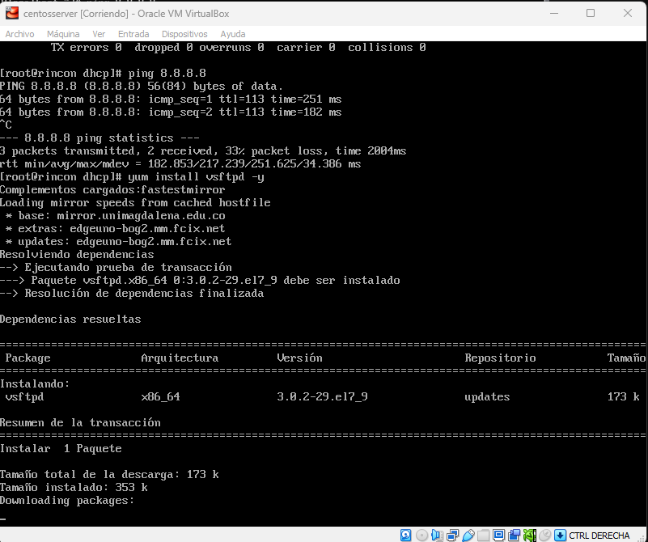

FTP: Protocolo de Transferencia de Archivos-File Transfer Protocol
Puerto TCP 20-21
Es un protocolo de red que se utiliza para transferir archivos entre un cliente y un servidor en una red de área amplia (WAN) o en una red de área local (LAN). FTP permite a los usuarios conectarse a un servidor remoto y transferir archivos entre el servidor y su computadora local. Para conectarse a un servidor FTP, se requiere un cliente FTP que proporcione una interfaz para enviar y recibir archivos. Los clientes FTP populares incluyen FileZilla, Cyberduck, y WinSCP, entre otros.
Para empezar: el adpatador de red debe estar en NAT o Adaptador puente para tener conexion a internet y poder descragar los paquetes de los servicios a instalar. Al ingresar al centos debe ingresar como super usuario:


Proceso de Instalacion:
Para empezar la insltalacion se debe emplear el comando "nmtui" para activar tarjeta de red.


Despues se hacemos un reset y Ping a Google para comprobar la conexión
Ahora se procede a instalar el paquete del servicio:

y al finalizar la instalacion se vera así
Se modifica el adaptador de Red a red inetrna

Nuevamente nmtui para generar la conexión, en configuracion manual y ademas tendra asignada la ip del servidor, la puerta de enlace y la ip del dns que sera la misma del servidos, como se muestra en la imagen:


Despues se hace la configuración del archivo vsftpd.conf como muestra la imagen y se hace enter
Aparecera en pantalla el siguiente archivo el cual se debe modificar y debe quedar de la siguiente manera
Se inicia el servicio ftp, ademas se para el firewall del servidor:
Se tendra lista la instalación y configuración del servicio FTP, se puede proceder a hacer las pruebas con el cliente